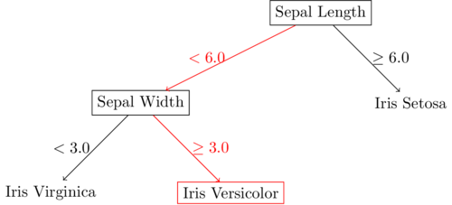

Decision trees are a non-parametric regression and classification method that can be used to estimate categorical and real-valued output given real-valued input vectors. In this post, the "Classification and Regression Trees" (CART) approach will be used to build trees. The maximum depth as well as minimum leaf size will be considered parameters of the tree. Cost-complexity pruning will not be examined for the purposes of this post.
The input table and decision tree below show how a learned decision tree works. In this classification example, the input is classified as "Iris Versicolor" due to the "Sepal Length" feature being less than \(6.0\) and the "Sepal Width" feature being \(\geq 3.0\). Classification and regression using decision trees is calculated by taking and input and traversing the tree until a leaf node is reached.
| Sepal Length | Sepal Width | Petal Length |
|---|---|---|
| 5.84 | 3.05 | 3.76 |

Decision trees are learned by recursively splitting the data set until a parameter setting is met (the maximum depth has been reached, or the data set contains fewer elements than the required minimum leaf size), or if features are examined without replacement, until there are no more features left to be split on. At each split, a feature and value pair is chosen that separates the data most effectively. Determining the effectiveness of a split can be done in multiple ways. For the purposes of this post, for a decision tree regressor, splitting is performed using mean squared error, and for a decision tree classifier, splitting is performed using the gini index.
Given data set \(X\), a split is chosen resulting in 2 subsets of \(X\), \(R_1\) and \(R_2\) such that the sum of mean squared errors of \(R_1\) and \(R_2\) are minimized
Code for a decision tree regressor is shown in the block below
from typing import List
import torch
class Node:
def __init__(self, left=None, right=None, attribute: int=None, value: float=None, label: float=None) -> None:
""" Instantiate member of Node class
Args:
left: left child
right: right child
attribute: column of dataset to split on
value: value of attribute to split on
label: majority class label at this node
counts: frequency of each class at this node
"""
self.right, self.left = right, left
self.attribute = attribute
self.value = value
self.label = label
def MeanSquaredError(y: torch.Tensor, yhat: torch.Tensor) -> float:
""" Calculate mean squared error rate
Args:
y: true labels
yhat: predicted labels
Returns:
mean squared error
"""
return torch.sum((y - yhat)**2) / y.shape[0]
class DecisionTreeRegressor:
def __init__(self, maxDepth: int=None, leafSize: int=1) -> None:
""" Instantiate member of DecisionTreeClassifier class
Args:
maxDepth: maximum depth to allow when building tree
leafSize: minimum number of members required to split a node
"""
self.maxDepth = maxDepth
self.leafSize = leafSize
self.root = None
def fit(self, x: torch.Tensor, y: torch.Tensor) -> None:
""" Fit decision tree to dataset
Args:
x: training data
y: labels corresponding to x
"""
self.root = self.buildTree(x, y, leafSize=self.leafSize, maxDepth=self.maxDepth)
def predict(self, x: torch.Tensor) -> torch.Tensor:
""" Predict label given input
Args:
x: input data
Returns:
tensor of predicted labels
"""
y = []
for ridx in range(x.shape[0]):
curnode = self.root
while not (curnode.left is None and curnode.right is None):
if x[ridx, curnode.attribute] <= curnode.value: curnode = curnode.left
else: curnode = curnode.right
y.append(curnode.label)
return torch.Tensor(y)
def splitValue(self, x: torch.Tensor, y: torch.Tensor, attribute: int) -> (float, float):
""" Determine best split value given an attribute
Args
x: input dataset
y: input dataset labels
attribute: column to find best split value on
Returns:
the best split value and the mean squared error of the split at that
value
"""
mins, minval = None, float("inf")
for sidx in range(self.leafSize, x.shape[0]):
if x[sidx, attribute] != x[sidx-1, attribute]:
c1 = torch.mean(y[:sidx])
c2 = torch.mean(y[sidx:])
mse = (MeanSquaredError(y[:sidx], c1) + MeanSquaredError(y[sidx:], c2)).item()
if mse < minval:
mins = ((x[sidx-1, attribute] + x[sidx, attribute]) / 2).item()
minval = mse
return mins, minval
def splitAttributeValue(self, x: torch.Tensor, y: torch.Tensor) -> (int, float, float):
""" Given a dataset, return best (attribute, value) pair to split on
Args:
x: input dataset
y: input dataset labels
Returns:
attribute to split on, attribute value to split on, and mean squared
error at that split
"""
# Find best split attribute, value
minj, mins, minval = None, None, float("inf")
for j in range(x.shape[1]):
xargs = torch.argsort(x[:, j])
x, y = x[xargs], y[xargs]
s, val = self.splitValue(x, y, j)
if val < minval:
minj = j
mins = s
minval = val
return minj, mins, minval
def buildTree(self, x: torch.Tensor, y: torch.Tensor, depth: int=0, maxDepth: int=None, leafSize: int=1) -> Node:
""" Build decision tree given a dataset
Args:
x: input dataset
y: input dataset labels
depth: depth of current node
maxDepth: maximum allowed depth of tree
leafSize: minimum required members of node for split
Returns:
root node of tree
"""
if (x.shape[0] <= leafSize) or (maxDepth is not None and depth==maxDepth):
label = torch.mean(y)
return Node(label=label)
else:
attribute, value, mse = self.splitAttributeValue(x, y)
if value is None:
label = torch.mean(y)
return Node(label=label)
else:
largs = (x[:, attribute] <= value)
rargs = (x[:, attribute] > value)
left = self.buildTree(x[largs], y[largs], depth+1, maxDepth, leafSize)
right = self.buildTree(x[rargs], y[rargs], depth+1, maxDepth, leafSize)
return Node(left, right, attribute, value)
Given data set \(X\), a split is chosen resulting in 2 subsets of \(X\), \(R_1\) and \(R_2\) such that the sum of gini index values of \(R_1\) and \(R_2\) are minimized
Code for a decision tree classifier is shown in the block below
from typing import List
import torch
class Node:
def __init__(self, left=None, right=None, attribute: int=None, value: float=None, label: float=None) -> None:
""" Instantiate member of Node class
Args:
left: left child
right: right child
attribute: column of dataset to split on
value: value of attribute to split on
label: majority class label at this node
counts: frequency of each class at this node
"""
self.right, self.left = right, left
self.attribute = attribute
self.value = value
self.label = label
class DecisionTreeClassifier:
def __init__(self, maxDepth: int=None, leafSize: int=1) -> None:
""" Instantiate member of DecisionTreeClassifier class
Args:
maxDepth: maximum depth to allow when building tree
leafSize: minimum number of members required to split a node
"""
self.maxDepth = maxDepth
self.leafSize = leafSize
self.root = None
def fit(self, x: torch.Tensor, y: torch.Tensor, classes: List[float]) -> None:
""" Fit decision tree to dataset
Args:
x: training data
y: labels corresponding to x
classes: list of unique possible labels
"""
self.root = self.buildTree(x, y, classes, leafSize=self.leafSize, maxDepth=self.maxDepth)
def predict(self, x: torch.Tensor) -> torch.Tensor:
""" Predict label given input
Args:
x: input data
Returns:
tensor of predicted labels
"""
y = []
for ridx in range(x.shape[0]):
curnode = self.root
while not (curnode.left is None and curnode.right is None):
if x[ridx, curnode.attribute] <= curnode.value: curnode = curnode.left
else: curnode = curnode.right
y.append(curnode.label)
return torch.Tensor(y)[:, None]
def calcGiniIndex(self, counts: dict, size: int, classes: List[float]) -> float:
""" Calculate gini index value given
Args:
counts: dictionary of counts for each class
size: total size of dataset being examined
classes: list of unique classes
Returns:
gini index value
"""
probs = { c: (counts[c] / size) for c in classes }
gini = sum([(counts[c]/size) * (1 - (counts[c]/size)) for c in classes])
return gini
def splitValue(self, x: torch.Tensor, y: torch.Tensor, attribute: int, classes: List[float]) -> (float, float):
""" Determine best split value given an attribute
Args
x: input dataset
y: input dataset labels
attribute: column to find best split value on
classes: list of possible unique labels
Returns:
the best split value and the gini index of the split at that value
"""
value, purity = None, float("inf")
# Initialize counts for splits c1 and c2 to calculate rolling gini index
c1 = { c: 0 for c in classes }
c2 = { c: torch.sum((y==c).float()).item() for c in classes }
for vidx in range(x.shape[0]-1):
c1[y[vidx].item()] += 1
c2[y[vidx].item()] -= 1
if x[vidx, attribute] != x[vidx+1, attribute]:
g1 = (vidx + 1) * self.calcGiniIndex(c1, vidx + 1, classes)
g2 = (x.shape[0] - (vidx + 1)) * self.calcGiniIndex(c2, x.shape[0] - (vidx + 1), classes)
gini = g1 + g2
if gini < purity:
value = ((x[vidx, attribute] + x[vidx+1, attribute]) / 2).item()
purity = gini
return value, purity
def splitAttributeValue(self, x: torch.Tensor, y: torch.Tensor, classes: List[float]) -> (int, float, float):
""" Given a dataset, return best (attribute, value) pair to split on
Args:
x: input dataset
y: input dataset labels
classes: list of unique possible labels
Returns:
attribute to split on, attribute value to split on, and gini index at
that split
"""
attribute, value, purity = None, None, float("inf")
for aidx in range(x.shape[1]):
xargs = torch.argsort(x[:, aidx])
x, y = x[xargs], y[xargs]
val, gini = self.splitValue(x, y, aidx, classes)
if gini < purity:
attribute, value, purity = aidx, val, gini
return attribute, value, purity
def buildTree(self, x: torch.Tensor, y: torch.Tensor, classes: List[float], depth: int=0, maxDepth: int=None, leafSize: int=1) -> Node:
""" Build decision tree given a dataset
Args:
x: input dataset
y: input dataset labels
classes: list of possible unique labels
depth: depth of current node
maxDepth: maximum allowed depth of tree
leafSize: minimum required members of node for split
Returns:
root node of tree
"""
if (x.shape[0] <= leafSize) or (maxDepth is not None and depth==maxDepth):
counts = [(c, torch.sum((y==c).float()).item()) for c in classes]
label = sorted(counts, key=lambda x: x[1])[-1][0]
return Node(label=label)
else:
attribute, value, purity = self.splitAttributeValue(x, y, classes)
if value is None:
counts = [(c, torch.sum((y==c).float()).item()) for c in classes]
label = sorted(counts, key=lambda x: x[1])[-1][1]
return Node(label=label)
else:
largs = (x[:, attribute] <= value)
rargs = (x[:, attribute] > value)
left = self.buildTree(x[largs], y[largs], classes, depth+1, maxDepth, leafSize)
right = self.buildTree(x[rargs], y[rargs], classes, depth+1, maxDepth, leafSize)
return Node(left, right, attribute, value)